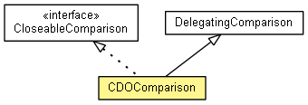

org.eclipse.emf.cdo.compare
Class CDOComparison
java.lang.Object
 org.eclipse.emf.cdo.compare.DelegatingComparison
org.eclipse.emf.cdo.compare.CDOComparison
org.eclipse.emf.cdo.compare.DelegatingComparison
org.eclipse.emf.cdo.compare.CDOComparison
- All Implemented Interfaces:
- CloseableComparison, Closeable
- public class CDOComparison
- extends DelegatingComparison
- implements CloseableComparison

A comparison that can be closed to dispose of used resources.
|
Constructor Summary |
CDOComparison(IComparisonScope scope,
Comparison delegate,
Set<Object> objectsToDeactivateOnClose)
|
| Methods inherited from class org.eclipse.emf.cdo.compare.DelegatingComparison |
eAdapters, eAllContents, eClass, eContainer, eContainingFeature, eContainmentFeature, eContents, eCrossReferences, eDeliver, eGet, eGet, eInvoke, eIsProxy, eIsSet, eNotify, eResource, eSet, eSetDeliver, eUnset, getConflicts, getDelegate, getDifferences, getDifferences, getEqualityHelper, getEquivalences, getMatch, getMatchedResources, getMatches, isThreeWay, setThreeWay |
| Methods inherited from class java.lang.Object |
clone, equals, finalize, getClass, hashCode, notify, notifyAll, toString, wait, wait, wait |
CDOComparison
public CDOComparison(IComparisonScope scope,
Comparison delegate,
Set<Object> objectsToDeactivateOnClose)
getScope
public final IComparisonScope getScope()
isClosed
public boolean isClosed()
- Specified by:
isClosed in interface Closeable
close
public void close()
- Specified by:
close in interface Closeable
Copyright (c) 2012 Eike Stepper (Berlin, Germany) and others.